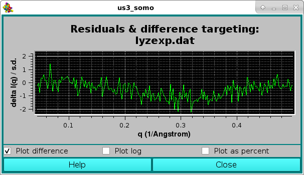

| |
Manual |
Previously computed csv-style I(q) vs. q files, such as those generated using the US-SOMO Batch Mode, can also be uploaded in the SOMO SAXS/SANS graphics window by pressing the Load SAXS (or Load SANS) button.
If one or multiple files were already loaded in the SAS window, a pop-up window will appear asking to select a target curve upon which the new data to be plotted can be rescaled:

Then, a new window "Load, manage, and process SAS data" will open listing all the individual curves present in the csv file, plus all other files already uploaded into the graphics window.
Individual data can be selected/deselected by clicking on them, or they can all be selected/deselected by pressing the Select All button. Several operations can then be performed before returning to the graphics window. In the example shown below, the first ten datasets were selected and the Create average curve, Create std deviation curves, Only plot stats, and Save to csv checkboxes were ticked. This will create an average curve from the selected dataset, plus +1 SD and -1 SD curves. Only the average and SD curves will be plotted (because the Only plot stats checkbox was selected). Furthermore, the resulting average and SD curves will be saved in another csv file, whose filename can be entered in the field next to the Save to csv checkbox. The original source data can be also saved in the new csv file by ticking the Include source data checkbox.
Unticking the Clear plot checkbox in the lower right corner will leave previously plotted data in the SAS window.

After the appropriate selection, if one or multiple files were already loaded in the SAS window, pressing the Plot button will bring up again the pop-up window asking to select a target curve upon which the new data to be plotted can be rescaled:
After selecting the curve and pressing OK, the graphics window will be updated (and at the same time also the progress window in the bottom-left corner of the panel):

Here the filenames are also shown (pressing the Legend button in the US-SOMO SAXS/SANS panel), and the width of the curves was also increased (pressing once the Width button in the US-SOMO SAXS/SANS panel).
Since in this case the Clear plot checkbox was unticked, the resulting average curve is scaled against the selected target curve, and a pop-up window with the residuals will appear:

From the SAXS/SANS I(q) Plotting Functions: panel, pressing the Load Plotted button will re-open the Load, manage, and process SAS data window, listing all data currently shown on the graphics window, on which further operations can be performed:
For instance, the selected data, which are stored in rows, can be transposed into columns by pressing the Transpose button (the number in parentheses in the button label will show how many datasets are going to be transposed). This will bring up a save window where a path and a filename can be chosen. The transposed file will be saved in csv format.
Alternatively, a Crysol-compatible file can be saved by pressing the Save .DAT button, bringing up again a save window where a path and a filename can be chosen. Currently (June 2022) only one dataset at the time can be saved in .DAT format (2 or 3 columns, depending on the presence of SD data).
Pressing the Save button will instead save the selected dataset(s) into another csv file maintaining the rows storage format.
Pressing Cancel will close this window.
More operations can be performed on multiple I(q) vs. q files within this module.
A non-negative least squares (NNLS) procedure can be utilized to find the best combination of model curves matching an experimental dataset. This operation is performed by first selecting the experimental dataset by clicking on it, and then pressing the Select Target button (available only when a single dataset is selected). The chosen dataset name will then appear in the field next to the Select Target button. If a single (experimental) data file was already loaded into the graphics window, it will be automatically chosen as the target dataset (but it could be changed as described above). Next, the datasets on which the NNLS is to be performed are selected (efficiently by first pressing the Select All button and then de-selecting the unwanted datasets by single-clicking on their names):

Pressing the Plot button will then launch the NNLS operation, at the end of which the program will return to the main US-SOMO SAXS/SANS panel. Since the Clear plot buttom was left checked, the pop-up window asking to confirm/change/deselect a target curve upon which the new data to be plotted can be rescaled will not appear, and the graphics window will be updated:
Here, the Err checkbox in the main US-SOMO SAXS/SANS panel has been selected, allowing to show the target curve as points with their associated error bars.
At the same time, the progress window will report the results of the NNLS fit:
In the example above, two models, #18 & #23, contributed respectively by 65% and 35% to the final curve. The goodness of the fit is also evaluated by checking the residuals window:

Here, the two horizontal white lines indicates ± 2 SD. Alternatively, the residual can be viewed in a % mode by selecting the Plot as a percent checkbox, where the two horizontal lines indicate ± 5% :

Likewise, the best mathing curve from an ensemble can be found by selecting the Best fit checkbox, and proceed as described above for the NNLS fit. At the end of the process, the program will return to the main US-SOMO SAXS/SANS panel, and at the same time also the progress window in the bottom-left corner of the panel:

In the example shown above, model #18 was found to have the best fit with the target experimental data. The curve is shown in green on the graphics window, and the same color is used in the progress window to indicate it.
As for the NNLS fit, the goodness of the fit is also evaluated by checking the residuals window:

Starting with the July 2022 intermediate release, it is now also possible in this module to sequentially process multiple I(q) vs. q datasets with the IFT method (see here) to produce the corresponding pair-wise distance distribution functions p(r) vs. r.
In the example below, we use WAXSiS-generated I(q) vs. q datasets from the first five models in the lysozyme NMR structure 1E8L.pdb, loaded from the main US-SOMO SAXS/SANS panel:

Pressing Load Plotted will bring up the Load, manage, and process SAS data window:
The computations are started by first selecting the Compute IFT checkbox, and then pressing the Run button (note that IF the I(q) vs. q datasets do not have standard deviations associated to each I(q) point, the Run button will NOT be available). The IFT module settings window will pop-up:
where we have changed the "Number of points in p(r)" from the default 50 to 100, and we have not entered a "Maximum diameter [Angstrom]" value, leaving all other fields unchanged. IMPORTANT: these parameters will apply to ALL the datasets selected!. Pressing the Process button will start the IFT program, whose progress will be displayed in the text window.
At the end of the first dataset processing, a pop-up panel will appear, asking for the potential normalization of the resulting p(r) vs. r function:

and reporting in the Remember for all files that contain: field the name of the first dataset processed. The normalization is done by entering the molecular weight of the structures from which the I(q) vs. q datasets were generated in the Molecular Weight (Daltons) field. To be able to apply this molecular weight to all the subsequent datasets, the Remember for all files that contain: checkbox should be selected, and a minimum common name should be left in its correspondfing field:
Pressing Close will allow the IFT process to complete and the various p(r) vs. r functions will be displayed in the P(r) Distribution Curve window:

and will be saved in both the ".dat" and ".sprr" formats. For multiple IFT processing, the back-calculated I(q) vs. q curves will not be displayed in the SAXS Curve window. Summary ".txt" files, containg also the computation of the radius of gyration, will also be produced.
This document is part of the UltraScan Software Documentation
distribution.
Copyright © notice.
The latest version of this document can always be found at:
Last modified on June 29, 2022
{kind=link}